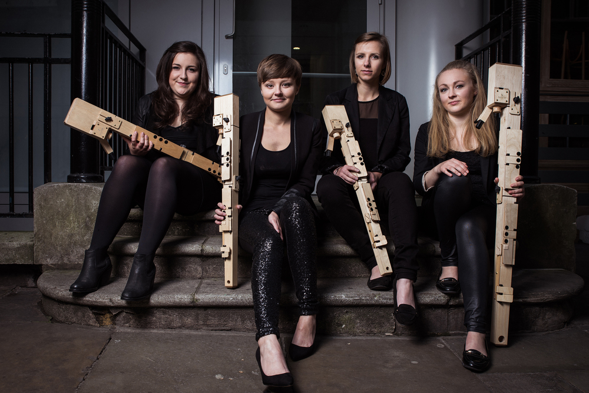

840: New Music for Recorders
7.30pm, 13 July 2015 at the St James', Islingon

840 presents recorder quartet Block4, winners of the Royal Overseas League Ensemble competition, performing new works by Andy Ingamells, James Luff and Amber Priestley. The programme also featured a UK premiere of The Feeling of Remembering by Christopher Fox.
Block4 are: Emily Bannister, Lucy Carr, Katie Cowling and Rosie Land.